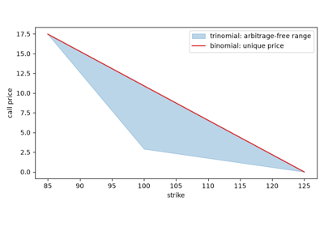

Examples#
This gallery walks through every public feature of
financialkit.asset_pricing: equity valuation by discounted
dividends, Modigliani-Miller and Shiller’s variance bound; the CAPM,
Jensen’s alpha, the zero-beta CAPM and the GRS test; factor regressions,
Fama-MacBeth, the APT, Fama-French and Carhart factors; consumption-based
pricing and the equity premium puzzle; and the stochastic discount
factor.
Each script in this gallery is self-contained and can be run directly with
python examples/asset_pricing/<section>/<script>.py.
Sections#
valuation – Williams’s dividend discount model, Modigliani-Miller, Gordon growth and Shiller’s excess volatility.
capm – the security market line, Jensen’s alpha, Black’s zero-beta CAPM and the Gibbons-Ross-Shanken test.
factors – Fama-MacBeth regressions, Ross’s APT, the Fama-French three factors and Carhart’s momentum.
consumption – Lucas’s tree, Breeden’s consumption CAPM and the equity premium puzzle.
sdf – Harrison-Kreps state prices and the Hansen-Jagannathan bound.
The CAPM#
The security market line, performance measurement with Jensen’s alpha, the zero-beta CAPM without a riskless asset, and the exact test of whether a portfolio is mean-variance efficient.
Consumption-based pricing#
Asset prices from a representative agent’s Euler equation: Lucas’s tree, the consumption CAPM and the equity premium puzzle.
Factor models#
Estimating risk premia from the cross-section, the arbitrage argument for linear pricing, and factors built by sorting stocks on size, value and momentum.
The stochastic discount factor#
No arbitrage as the existence of positive state prices, and the volatility a discount factor needs to price the assets.

Harrison-Kreps: state prices and the stochastic discount factor
Valuation#
What a share is worth: the present value of its dividends, the effect of leverage on the cost of capital, and whether prices move more than dividends justify.